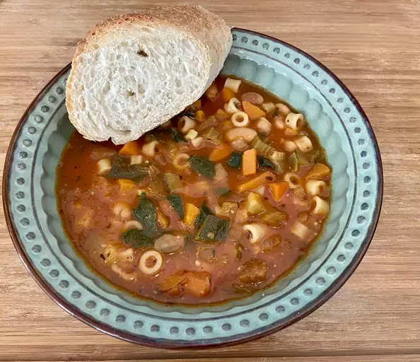

Minestrone Soup

A classic recipe
This is a great soup recipe when you want a delicious flavorsome meal.
Ingredients
- 1 Tablespoon of olive oil
- 1 Cup diced onion
- 3/4 Cup diced carrot
- 3/4 Cup sliced celery
- 1 Teaspoon of minced garlic
- 1 1/2 Teaspoons minced fresh rosemary
- 1 Can of Contadina Tomato Sauce
- 1 Can of cannellini beans, rinsed and drained
- 2 1/2 Cups of water
- 2 Cups College Inn Chicken Broth
- 1 Cup diced zucchini
- 1/2 Cup dry ditalina pasta
- 1/4 Teaspoon black pepper
- 1/4 Cup chopped fresh italian parsley
- 1 Tablespoon shredded Parmesan cheese, or enough to taste
How to make
- Heat the oil in a large saucepan over medium-high heat. Saute onion, carrot, celery, garlic and rosemary until vegetables begin to soften, about 5 minutes.
- Stir in tomato sauce, beans, water, broth, zucchini, pasta, and pepper and bring to a simmer.
- Cook, uncovered and stirring occasionally, until pasta is tender approximately 10 minutes. Stir in the parsley and serve topped with parmesan. Enjoy!
Return Home